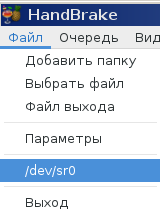

Подобрать вручную опции для переконвертирования DVD VOB-файлов в MPEG-4/MKV очень сложно, хотя и возможно. Проще всего воспользоваться графическими надстройками к ffmpeg.
Есть два более-менее вменяемыех графических интерфейса под Linux, использующих ffmpeg для перекодирования. Это winff и handbrake. К сожалению, они разрабатываются отдельно от самого ffmpeg, и зачастую разработчики GUI не знают об изменениях командной строки.
Например, в Debian Linux Jessie winff пытается использовать libvo_aacenc, в то время как эта билиотека уже исключена из поддержки ffmpeg. И даже ручная установка пакета libavcodec-extra не помогает. Подолбавшись с winff стало ясно, что в 2017 году с его помощью сконвертировать DVD в какой-нибудь другой более приличный контейнер не получится.
Остается HandBrake. Интерфейс у него такой же марсианский, как и у видеоредакторов типа Kino или Avidemux, зато если знать как, то можно сконвертировать как физический DVD, так и набор файлов, скопированный с DVD.
Обычно, на диске лежат такие файлы:
VIDEO_TS.BUP
VIDEO_TS.IFO
VIDEO_TS.VOB
VTS_01_0.BUP
VTS_01_0.IFO
VTS_01_0.VOB
VTS_01_1.VOB
VTS_01_2.VOB
VTS_01_3.VOB
VTS_01_4.VOB
VTS_01_5.VOB
VTS_01_6.VOB
Если они размещены в отдельном каталоге, то HandBrake сможет его распарсить как обычный DVD.
Чтобы открыть непосредственно DVD, нужно вставить DVD-диск в привод, и выбрать в меню Файл - /dev/sr0:

Чтобы открыть в качестве DVD-диска каталог с файлами, скопированными с DVD, нужно сделать неочевидную вещь. Нужно нажать Файл - Добавить папку. Далее нужно указать каталог, где лежат VOB-файлы. Входить вовнутрь каталога ненужно, нужно указать именн